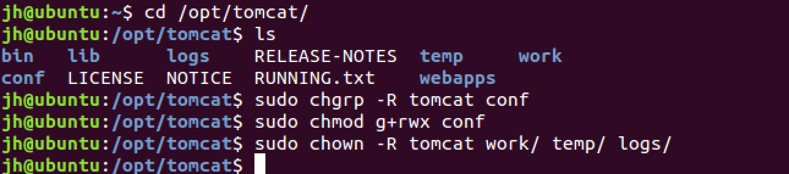
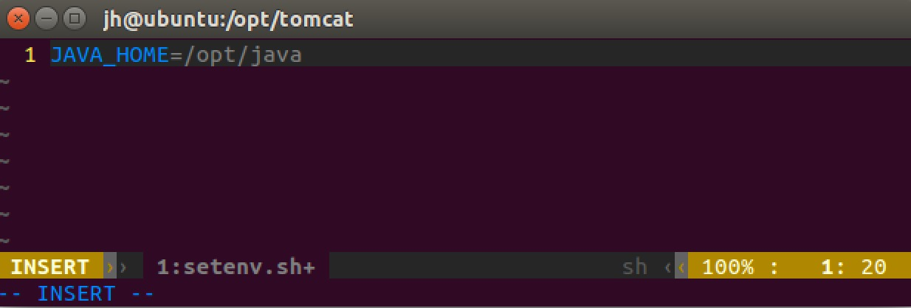
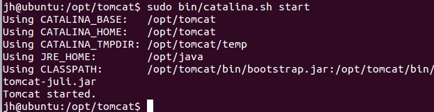
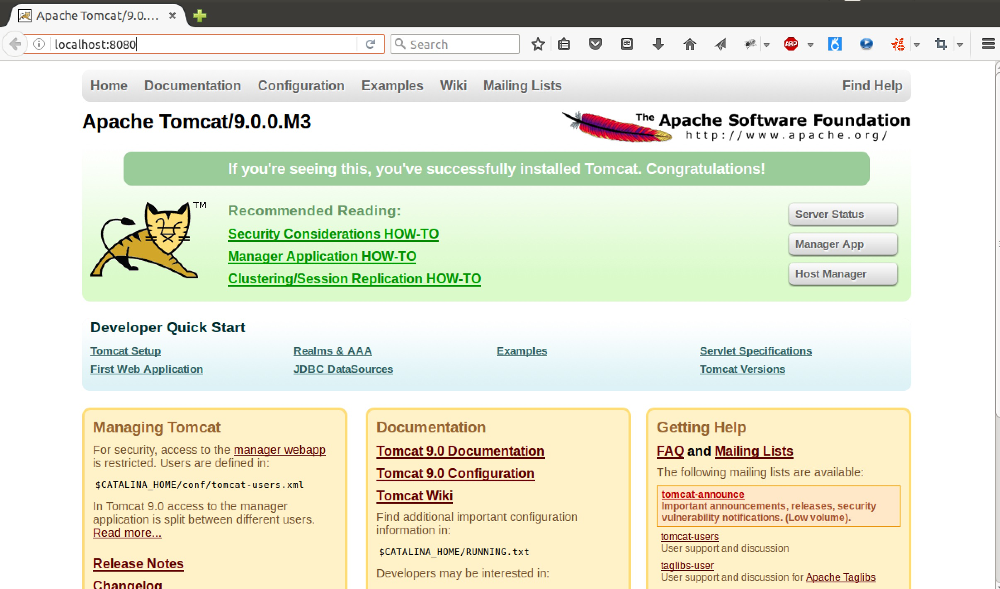
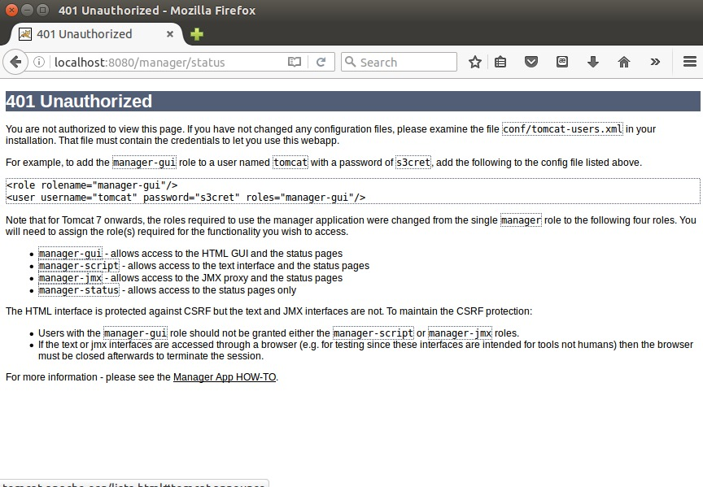
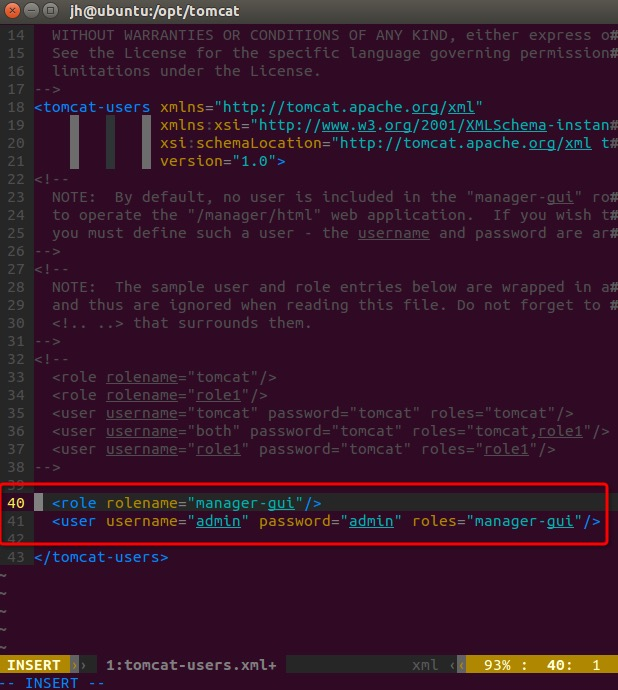
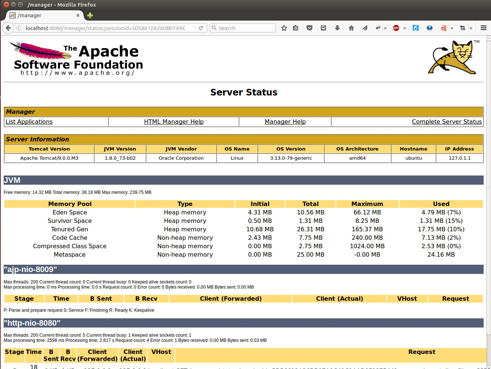

1. 安装 JAVA 🔗
在安装 Tomcat 之前，必须得先安装 JDK 或 JRE。
JRE 是JAVA 程序运行的基础，它提供了 JVM 等 JAVA 运行环境。而 JDK 是给开发JAVA程序的人员提供了包括JRE在内的基本环境以及一些开发工具，例如 JAVAC。 Tomcat 是使用 JAVA 进行 Web 开发的应用服务器（Application Server）软件。当从网络上有请求到达 Tomcat 服务器时，它会根据请求的地址来调用你写的 JAVA 程序模块。
简单来说，假设 http://xxx.com 是一个 Java 写的网站，那么当在浏览器输入网址并敲下回车后，Tomcat 会得到一个希望访问 /（根目录资源）的请求。然后它去配置文件里查根目录对应的模块是什么。假设查到的模块是 root 这个类，那么它会去调用 root.doGet() 方法。而你写一个 Servlet 的时候，必须实现 doGet()方法，此时你的方法被调用，那么你写的代码就运行了。
当然，实际情况会比这个更复杂。
如果还没有安装 JAVA 开发环境，可参考：Ubuntu下JAVA开发环境的配置
2. 创建 tomcat 用户 🔗
为了安全考虑，Tomcat 需要以普通用户的权限来运行。所以我们将创建一个用户和用户组，来运行 Tomcat 服务。
首先，创建一个 tomcat 用户组：
sudo groupadd tomcat
然后我们再创建一个 tomcat 用户，该用户有如下条件：
tomcat用户属于tomcat用户组；tomcat用户主目录为/opt/tomcat，这个目录也是我们将用来安装 tomcat 的目录（当然也可以是你喜欢的其他目录）；tomcat不能登录
所创建 tomcat 用户的命令如下：
sudo useradd -s /bin/false -g tomcat -d /opt/tomcat tomcat
3. 安装 Tomcat 🔗
下载 Tomcat 二进制文件 🔗
首先下载 Tomcat。目前 Tomcat 的最新版本是 9.0.0.M3。可以在 http://tomcat.apache.org 找到最新版本的 Tomcat，然后拷贝其二进制链接地址，在终端使用 wget 命令进行下载：
cd ~
wget http://apache.fayea.com/tomcat/tomcat-9/v9.0.0.M3/bin/apache-tomcat-9.0.0.M3.tar.gz

然后我们需要将 Tomcat 安装到 /opt/tomcat 目录下面。
接下来创建安装目录，并将下载的二进制包解压到该目录。
sudo mkdir /opt/tomcat
sudo tar zxvf apache-tomcat-9.0.0.M3.tar.gz -C /opt/tomcat --strip-components=1
设置 Tomcat 用户权限 🔗
用户 tomcat 需要有合适的权限来运行 Tomcat 服务，所以接下来需要设置用户权限。
首先进入到 Tomcat 的安装目录：
cd /opt/tomcat
然后设置 tomcat 用户对 conf 目录的写权限，以及对其子目录的读权限：
sudo chgrp -R tomcat conf
sudo chmod g+rwx conf
接下来需要设置 tomcat 用户对 work/、temp/ 、logs/ 这几个目录的所有权：
sudo chown -R tomcat work/ temp/ logs/
完整命令如下图：

设置环境变量 🔗
Tomcat 运行的时候依赖于 JDK 或 JRE。所以还需要为 Tomcat 指定 JDK 或 JRE 的路径。按理说只要有 JRE 就够了，但要使用 Tomcat 的更多功能，如 debug，还需要 JDK。所以建议设置 JDK 的路径。
设置环境变量的方法是在 bin/ 目录下新建一个 setenv.sh 目录，然后将 JAVA_HOME=/opt/java 写入到该文件：
sudo vim bin/setenv.sh

环境变量设置完毕后就可以通过 catalina.sh 命令来启动 Tomcat 了。因为现在是在 /opt/tomcat 目录下，所以可以使用如图所示的命令来启动 Tomcat：
sudo bin/catalina.sh start

如果你是在别的目录下，也可以通过 sudo /opt/tomcat/bin/catalina.sh start 命令来启动 Tomcat 服务。
一切正常的话，就会提示 Tomcat 启动成功，那么 Tomcat。然后在浏览器中输入 localhost:8080 就可以看到 Tomcat 的主界面：

4. 配置 Web 管理员接口 🔗
Tomcat 提供了一个图形用户界面的管理后台，来方便我们管理使用 Tomcat 的 Web 应用。在 Tomcat 主页点击右上角的 Server Status 按钮，会弹出一个登录框，输入用户名和密码就可登录。但 Tomcat 安装后是没有默认的管理员帐户的，需要我们自己去配置。
如果登录的时候密码错误，就会出现一个 401 Unauthorized 的错误页面，这个页面上有提示信息，告诉我们应该怎么去配置管理员帐户：

接下来就来配置管理员帐户。Tomcat 后台管理员配置文件是 /opt/tomcat/conf/tomcat-users.xml，所以我们要编辑该文件：
sudo vim /opt/tomcat/conf/tomcat-users.xml
然后在最后一行的前面加上如下两行，username 和 password 可自行设置：
<role rolename="manager-gui" />
<user username="admin" password="password" roles="manager-gui"/>

编辑完了后保存，然后再重新启动 Tomcat 服务：
sudo /opt/tomcat/bin/catalina.sh stop
sudo /opt/tomcat/bin/catalina.sh start
重启后，再点击 Server Status 按钮，输入刚设置的用户名和密码就可以登录到后台：

至此，Tomcat 就安装成功！
Github Issue: https://github.com/nodejh/nodejh.github.io/issues/17